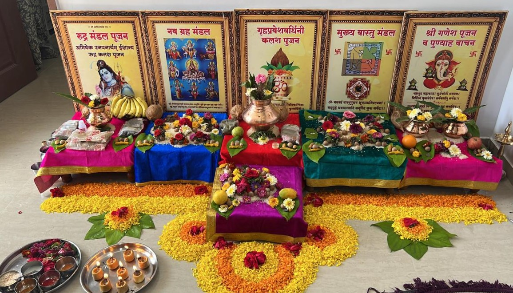

Satyanarayan Puja

Satyanarayan Puja is a Hindu religious ceremony dedicated to Lord Vishnu, particularly in his form as Satyanarayan, which translates to "the embodiment of truth." This puja holds significant importance in Hindu culture and is often performed to seek the blessings of Lord Vishnu for prosperity, well-being, and happiness in the family.
Common Benefits of Satyanarayan Puja:
- Blessings of Lord Vishnu
- Fulfillment of Desires
- Removal of Obstacles
- Family Harmony and Unity
- Prosperity and Wealth
- Positive Energy and Peace of Mind
Overall, the Satyanarayan Puja is considered to be auspicious and beneficial for devotees seeking divine blessings, fulfillment of desires, and spiritual upliftment.